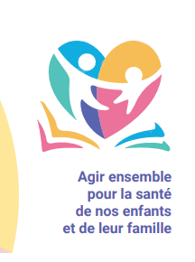

Création des dispositifs "Ecole en santé" et "CJA en santé"
Les dispositifs "Ecole en santé" et "CJA en santé" (Centres
de Jeunes Adolescents) visent à promouvoir la santé globale des élèves de 3 à 17 ans.
Ils proposent la mise en place d'actions prenant en compte les déterminants prioritaires de la santé des jeunes, en lien avec 10 thématiques (alimentation, activités physiques, lutte antivectorielle, etc. ). Ces actions sont identifiées, au sein de chaque établissement, par le comité de santé de l’école / du CJA.
En juin 2022, 35 établissements scolaires dont 9 hors îles du Vent participaient à ces dispositifs.
Ils proposent la mise en place d'actions prenant en compte les déterminants prioritaires de la santé des jeunes, en lien avec 10 thématiques (alimentation, activités physiques, lutte antivectorielle, etc. ). Ces actions sont identifiées, au sein de chaque établissement, par le comité de santé de l’école / du CJA.
En juin 2022, 35 établissements scolaires dont 9 hors îles du Vent participaient à ces dispositifs.
Informations
Année : 2017
Catégories :
Mots-clés :
Milieu scolaire,
Enfant,
Adolescent
Sources :
{% if sources %}
{% for src in sources %}
{% if src.url %}
{{ src.label }}
{% if not loop.last %}, {% endif %}
{% else %}
{{ src.label }}{% if not loop.last %}, {% endif %}
{% endif %}
{% endfor %}
{% else %}
Aucune source disponible.
{% endif %}Informations validées au 27/06/2025
Pour aller plus loin :
Des supports de communication et des outils d'accompagnement sont disponibles sur le site de {% for link in more_links %} {% if link.url %} {{ link.label }}{% if not loop.last %}, {% endif %} {% else %} {{ link.label }}{% if not loop.last %}, {% endif %} {% endif %} {% endfor %}